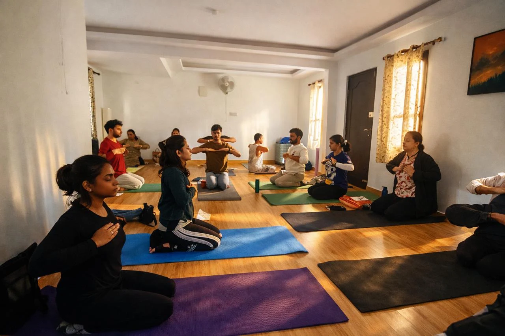

It starts with rhythm
Guided cycles of breath, taught in person. No experience needed — the rhythm does the work.
About Us
A sanctuary of peace in the heart of Indiranagar.
The Art of Living Happiness Center in Indiranagar is a beacon of holistic well-being, offering time-tested techniques that bring harmony to body, mind, and spirit. Founded on the principles of Sri Sri Ravi Shankar, our center has been transforming lives through the power of breath, meditation, and yoga.
Whether you're a beginner taking your first step toward wellness or a seasoned practitioner deepening your journey, our experienced instructors guide you with warmth and expertise every step of the way.

Telling yourself to relax never works.
When the mind won’t stop racing, effort only adds noise. Sudarshan Kriya works underneath the effort — in order.
Guided cycles of breath, taught in person. No experience needed — the rhythm does the work.
The rhythm reaches the inner tension that “just relax” cannot, helping the system reset from the inside out.
With less mental clutter, quiet, focus, and effortless creativity have space to return.
Sudarshan Kriya is taught here through the Happiness Program. Explore the Happiness Program →
Our Programs
No upcoming programs available.
Why Art of Living
A unique rhythmic breathing technique that eliminates stress, fatigue, and negative emotions — scientifically proven to enhance well-being.
Our programs sharpen focus, boost creativity, and bring mental clarity, helping you perform at your best in every area of life.
Learn to manage anxiety, anger, and depression naturally. Cultivate lasting joy and emotional resilience.
Join millions of practitioners worldwide. Connect with a vibrant local community right here in Indiranagar.
Testimonials
Get In Touch